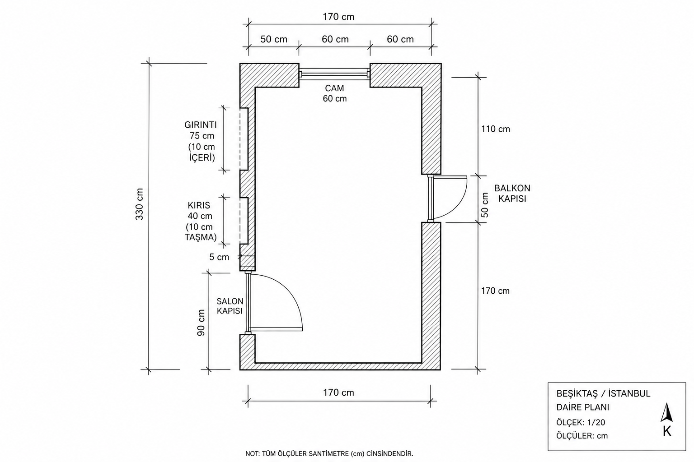

Sol kapı
Odaya doğru içeri açılır. Pervazdan sonra hemen 5 cm duvar kalır — menteşe/kasa payı. Kapı kanadı genişliği henüz yok; salınım yarıçapı buna bağlı.
Milimetrik duvar hattı · Beşiktaş 1903 · gerçek ürünler
Sol kapı → kiriş 40 / girinti 10 → cam 60 → sağ kapı 50 → 170 cm düz duvar. Tüm yerleşim bu sıraya kilitli.
Soldan sağa tarif ettiğin sıra. Sol kapı genişliği verilmedi; diğer tüm segmentler sabit.
Odaya doğru içeri açılır. Pervazdan sonra hemen 5 cm duvar kalır — menteşe/kasa payı. Kapı kanadı genişliği henüz yok; salınım yarıçapı buna bağlı.
5 cm’den sonra kiriş başlar: duvar boyunca 40 cm, odaya doğru 10 cm çıkıntı. Mobilya kiriş yüzüne yaslanmaz; önünde sığ geçiş kalır.
Kirişten sonra 10 cm derin girinti, sağa 75 cm. Önceki 20 cm varsayımı iptal. Sadece ≤9–10 cm raf / fotoşeridi; KALLAX/BESTÅ sığmaz.
Girintiden sonra 50 cm duvar → 60 cm cam → 60 cm duvar. Oda genişliği bu hatta ≈ 170 cm. Dar net açıklık; masa camı kapatmamalı.
Cam sonrası duvar 60 + 110 = 170 cm, sonra 50 cm kapı, içeri açılır. Salınım ≈50 cm yay; önü boş.
Kapı bitiminden 170 cm kesintisiz düz duvar — odanın en değerli mobilya bandı. BESTÅ 120 veya ikili oturma buraya.
Tarif soldan sağa tek hat. Köşe varsayımı: cam bandı karşı duvar (170 cm en); sağ kapı + 170 cm düz duvar yan duvar (330 cm derinlik).

170 cm en dar bir oda. 140 cm masa cam duvarına sığar ama kenar payı az; öncelik sağdaki 170 cm düz duvar.
Sağ kapı sonrası 170 cm: BESTÅ 120×42×193 (yan pay ~25 cm) veya 150–160 cm ikili kanepe. İkisi birden sığmaz — seçim: depo öncelikliyse BESTÅ + küçük puf; oturma öncelikliyse kanepe + duvar rafı.
Cam yalnızca 60 cm. Masa camın önüne merkezlenmez. FJÄLLBO 100×36 (dar) veya 140×70 oda derinliğine dik, camı kapatmadan. Petek üstü ince raf; ısı boşluğu şart.
10 cm derinlik: Trendyol’dan ≤10 cm siyah fotoşerit / ince raf. Etiketli kablo zarfları / düz kutular. BESTÅ ve KALLAX burada değil.
Sol kapı: yay bilinmiyor (eni eksik). Sağ kapı 50 cm: önünde ~50–55 cm boşluk. 110 cm’lik duvar parçası dar konsol / askılık için uygun; dolap konmaz.


170 cm düz duvar ve 10 cm girintiye göre süzülmüş liste. Linkler IKEA TR / Trendyol / Vivense.
170 cm en ve 60 cm cam için daha güvenli. Tekerlekli, taşınır. Kod: 303.397.35
ikea.com.tr →Cam duvarına (170) sığar ama iki yanda ~15 cm kalır. Tercihen oda eksenine dik, peteği kapatmadan.
ikea.com.tr →Sandalye; masa yanında salınımı kesmeyecek şekilde. Kod: 702.611.50
ikea.com.tr →Sağ kapı sonrası düz duvara. 120 < 170; yanlarda pay var. Girintiye (10 cm) asla değil. Kod: 590.594.61
ikea.com.tr →75 cm uzunlukta 1–2 raf. 18–20 cm derinlikli raflar taşar; ölçü filtresi: max 10 cm.
trendyol.com →Cam genişliği 60 cm; raf 60–80 cm seç, ısı boşluklu monte et.
moola.com.tr →170 cm düz duvara. BESTÅ ile aynı duvarı paylaşmaz. Alternatif: mevcut kanepe + siyah-beyaz tekstil.
vivense.com →39 cm derinlik; 10 cm girintiye uymaz. 110 cm’lik kapı öncesi duvara sıkışık; 170 cm banda BESTÅ tercih.
ikea.com.tr →Önce bantla işaretle; sonra tek mobilya.